Introduction
What is Taskfile or Go-Task ?
Taskfile , written in Go and officially tagged as task runner, is giving us an intuitive and modular way to run any CLI command.
I have been using Taskfiles to abstract away a long AWS CLI command or a few lines of bash script and execute them in the below fashion
task run_this_aws_commandtask run_this_bash_script
Basically, instead of running a command in a terminal, a repetitive task can be saved and run from a Taskfile.yml instead.
Refer here if you would like to read from the official source. You could also learn how to use Go-Task from the simplified, personalised examples that I have listed below.
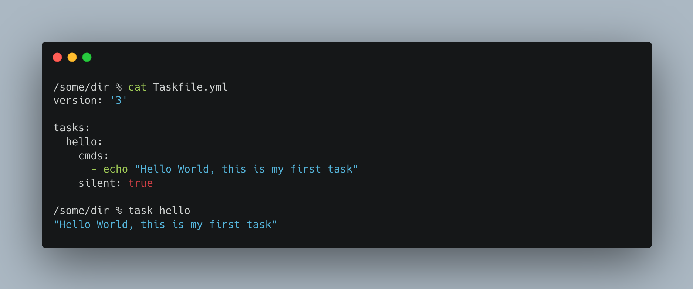
Before we begin the tutorial on this Taskfile, why Go-Task in the first place?
Whenever we build an application or even a part of that part application, we have a long list of setup terminal/CLI commands to execute. Often, those terminal commands are written in markdown files (like
Readme.md). We are made to copy-paste those commands from the markdown file to run.What if you run those commands grouped together as tasks in yaml file?
Go-Task simplifies the execution of the terminal commands and the modular aspect of the tasks act as good code-cum-documentation too. You can add comments too in those tasks residing in the yaml file.
A Foreword for this blog
- Won’t believe me on the ease of use? Get ready to start using it after reading the below breezy 9 sections!
- The 10th section could be a bit much! Sorry about that, it was purposefully intense as all real-world projects are. Still, I have attempted to get you the intent - so that you can create your own Taskfile magic for your real-world projects !
First things first, how to install Taskfile
- On a Linux or MacOS, you could do
brew install go-task/tap/go-task(other ways of installation includenpm,chocolatey, etc., | refer here)
All the codes below are in this repo https://github.com/senthilkumarm1901/taskfile_tutorial
1. Starting with a Simple Taskfile
- A Taskfile yml consists of
tasksattribute. The tasks in that attribute can be invoked in a terminal astask task_name
% cat hello_world/Taskfile.yml
version: '3'
tasks:
hello:
cmds:
- echo "Hello World!"
silent: false
hello_again:
cmds:
- echo "Hello Again!"
silent: trueResult:
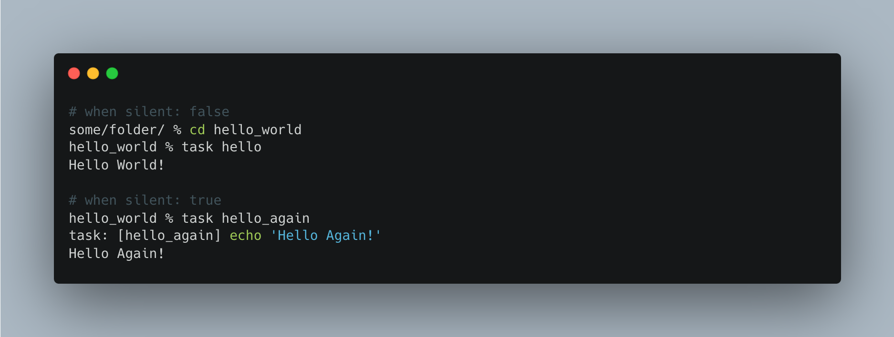
Note: - We had seen task and version attributes in the Hello World example Taskfile.yml above. - We are going to see many other attributes in the below sections. Here is a Taskfile Schema for a quick look at the different attributes
2. Calling a Task from Another Task
- The below YAML file is from the official documentation where the tasks
task-to-be-calledandanother-taskis called insidemain-tasktask
version: '3'
tasks:
main-task:
cmds:
- task: task-to-be-called
- task: another-task
- echo "Both done"
task-to-be-called:
cmds:
- echo "Task to be called"
another-task:
cmds:
- echo "Another task"(also refer 3.1 section task run_same_task_multiple_times_with_different_variables)
3. Environment Variables
- Environment Variables are written under a attribute
env
3.1 Global Environment Variables
- You can use the environment variables listed under
envattribute using$operator inside tasks - There is also a provision to source the environment variables from an external hidden file
- In the below example,
.envfile is used under the section titleddotenv: ['.env']
version: '3'
env:
PARENT_DIR: ../../taskfile_tutorial
CURRENT_DIR:
sh: echo $PWD
dotenv: ['.env']
tasks:
list_directories_under_parent_dir:
cmds:
- find $PARENT_DIR -type d
list_files_under_current_dir:
cmds:
- find $CURRENT_DIR -type f
create_new_dir:
cmds:
- mkdir -p $DIR_TO_CREATEenvironment_variables % cat .env
DIR_TO_CREATE="task_specific_env_variable"3.2 Task-specific Environment Variables
- While in the above
global environmentvaribales, I placed theenvsection just below theversionsection, in the below yaml fileenvsection is a sub-section under the tasks
version: '3'
tasks:
list_directories_under_parent_dir:
env:
DIR: ../../../taskfile_tutorial
cmds:
- find $DIR -type d
list_files_under_current_dir:
env:
DIR:
sh: echo $PWD
cmds:
- find $DIR -type f
create_new_dir:
cmds:
- # this $DIR is passed during run time `DIR=new_dir_name task create_new_dir`
- # the above line is an example of passing environment variable from outside the taskfile
- mkdir -p $DIR && ls ./Results:
- The same result below would have come for
Globalvariables as well. Ignored showing it to save space
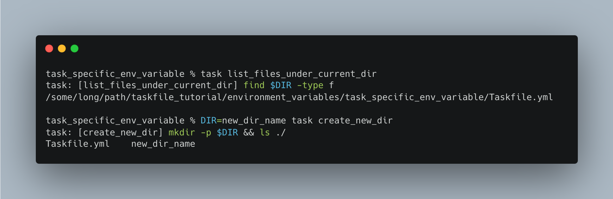
4. Variables
- Variables are written under the section
vars - You can use the variables using
{.VARIABLE_NAME}operator in tasks - Like environment variables, the generic variables can be used both in global and task-specific way
4.1 Global and Task-specific Variables
- In the below example, the
GLOBAL_VARis defined globally andSOME_VARis defined locally
version: '3'
vars:
GLOBAL_VAR: Hello
tasks:
run_same_task_multiple_times_with_different_variables:
cmds:
- task: length_of_word
vars: { SOME_VAR: 'case 1' }
- task: length_of_word
vars: { SOME_VAR: 'someother case 2' }
silent: true
length_of_word:
cmds:
- echo {{.SOME_VAR}} | wc -c
silent: true
print-global-variable:
# both underscores and hyphens are accepted in the task name
cmds:
- echo {{.GLOBAL_VAR}}
silent: true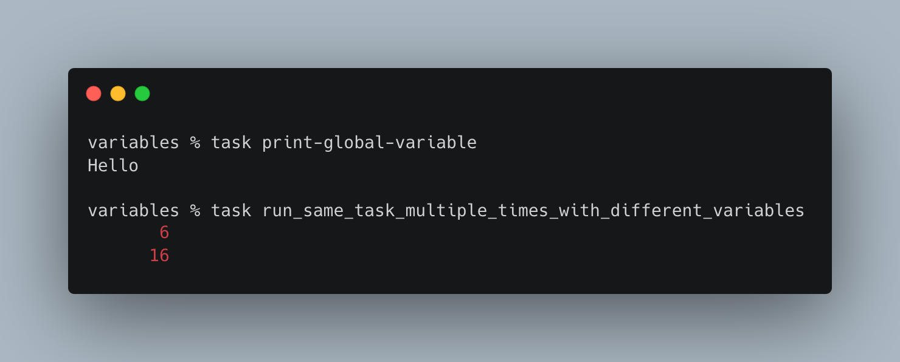
4.2 Special Variables & Passing Arguments
- I have listed two special variables in the tasks ‘{{.USER_WORKING_DIR}}’ and ‘{{.CLI_ARGS}}’
- Refer here for other
Special Variablesthat can be used: https://taskfile.dev/api/#special-variables
version: '3'
tasks:
# introducing a special variable '{{.USER_WORKING_DIR}}'
count_files:
dir: '{{.USER_WORKING_DIR}}'
cmds:
- echo "Number of files in {{.USER_WORKING_DIR}} "
- find . -maxdepth 1 -type f | wc -l
silent: true
# introducing a special variable '{{.CLI_ARGS}}'
# introducing passing special arguments
# task count_only_txt_files -- '*.txt'
count_only_txt_files:
dir: '{{.USER_WORKING_DIR}}'
cmds:
- echo "Number of txt files in {{.USER_WORKING_DIR}}"
- find . -maxdepth 1 -type f -name '{{.CLI_ARGS}}' | wc -l
silent: trueResults:
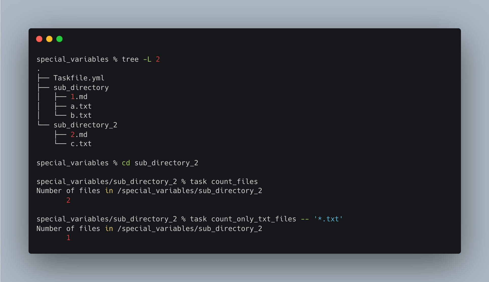
Note: - Even though the Taskfile.yml is in the main directory special_variables, it works inside the subdirectory because of '{{.USER_WORKING_DIR}}'
4.3 Passing Multiple Arguments
version: '3'
# what if you need to pass two arguments used in two different commands
# there is still only the hacky of splitting by a delimiter
# since '{{.CLI_ARGS}}' in essense takes just 1 string
# how to invoke the below task: `task passing_multiple_arguments -- arg 1,arg 2`
passing_multiple_arguments:
cmds:
- echo 'First - {{(split "," .CLI_ARGS)._0}}'
- echo 'Second - {{(split "," .CLI_ARGS)._1}}'
silent: trueResults:
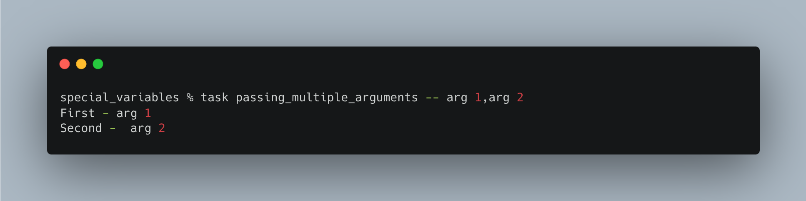
5. A Global Taskfile
- The below Taskfile needs to be placed in
$HOMEdirectory - You can then use the tasks using
task -gortask --globalcommand in any directory you want
version: '3'
tasks:
count_files_inside_current_dir:
dir: "{{.USER_WORKING_DIR}}"
cmds:
- echo "Number of files in {{.USER_WORKING_DIR}} "
- ls -l | grep -v "^d" | wc -l
silent: true
search_files_inside_current_dir:
dir: "{{.USER_WORKING_DIR}}"
cmds:
- find {{.USER_WORKING_DIR}} -type f -name {{.CLI_ARGS}}
silent: true
search_all_files_except:
cmds:
- find {{.USER_WORKING_DIR}} -type f | grep -v {{.CLI_ARGS}}
silent: true%Results:
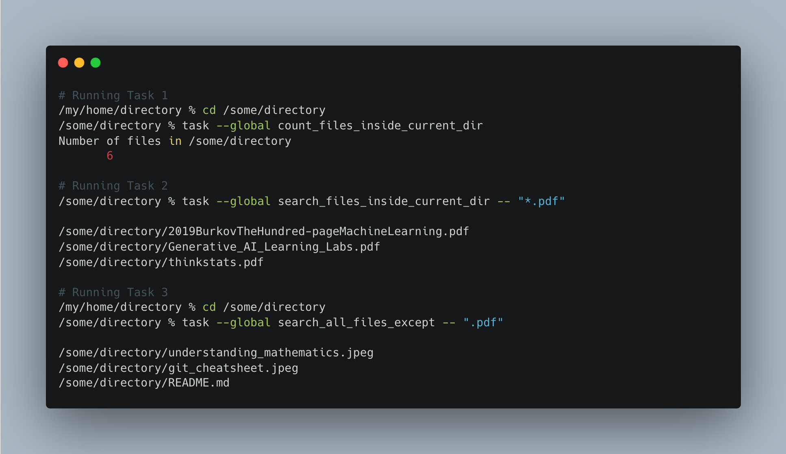
6. Multiline Commands
- What if you do not wish to write a long line and want to split the lines?
- You can use the pipe command
|to write the long lin in multiple commands
version: '3'
tasks:
multi-line-replace-command:
cmds:
- |
sed -e "s|<NAME>|SENTHIL|g" \
-e "s|<EMAIL>|senthilkumar.m1901@gmail.com|g" \
contact_details.txt
silent: true
will_not_work:
cmds:
- echo "Running in different lines"
- export A="some_value"
- echo "Value of A - $A"
silent: true
will_work:
cmds:
- echo "Running in the same line"
- |
export A="some_value"
echo "Value of A - $A"
silent: trueResults:
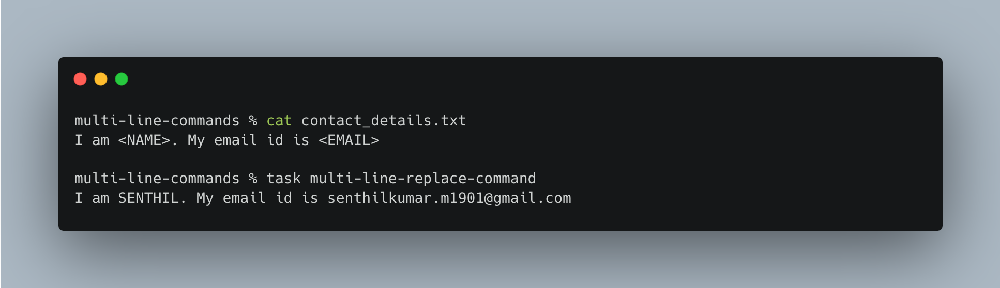
- Please note the presence of
export A="some_value"andecho "Value of A - $Acoming under the pipe command|intask will_work
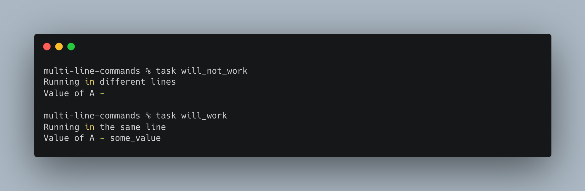
7. Should you always name the file Taskfile.yml ?
- Yes and No.
- Yes, because only from the supported file names such as [“Taskfile.yaml”, “Taskfile.dist.yaml”, “taskfile.yaml”, “taskfile.dist.yaml”], you can invoke a task as
task task_name(note:both “yaml” and “yml” extensions are supported) | refer here - No, because you could include tasks in other files but they have to be “included” in one of the supported file names above.
- The example from official documentation where they have used a different name is given below
- Yes, because only from the supported file names such as [“Taskfile.yaml”, “Taskfile.dist.yaml”, “taskfile.yaml”, “taskfile.dist.yaml”], you can invoke a task as
version: '3'
includes:
docs: ./documentation # will look for ./documentation/Taskfile.yml
docker: ./DockerTasks.yml- Did not get what I meant above? Refer section 8 below for a better example
8. Multiple Taskfiles in 1 Taskfile OR (calling a task from another taskfile)
# file #1
# this file is named as Taskfile.yml
version: '3'
includes:
conda_tasks:
taskfile: ./CondaTasks.yml
docker_tasks:
taskfile: ./DockerTasks.yml
pipenv_tasks:
taskfile: ./PipenvTasks.yml
tasks:
list_python_environments:
cmds:
- task conda_tasks:list_python_environments
- task docker_tasks:list_python_images
- task pipenv_tasks:list_locations_of_pipenv_environments
silent: true# file #2
# this file is named as
# CondaTasks.yml
version: '3'
tasks:
list_python_environments:
cmds:
- echo "The Python Conda Environments are"
- conda info -e | awk -F' ' '{ print $1 }' | grep -E '[a-z_-]+'
- echo ""
silent: true# file #3
# this file is named as
# DockerTasks.yml
version: '3'
tasks:
list_python_images:
cmds:
- echo "The Python Docker images are"
- docker image ls | grep -E "python|ubuntu" | awk '{ print $1, $2 }'
- echo ""
silent: true# file #4
# this file is named as
# PipenvTasks.yml
version: '3'
tasks:
list_locations_of_pipenv_environments:
vars: { 'location1': '~/my_projects', 'location2': '~/my_learnings', }
cmds:
- echo "The Python pipenv Environments are"
- echo
- echo "Locating pipenv environments in `~/my_projects`"
- find {{.location1}} -type d -name ".venv" | rev | cut -d / -f 2- | rev
- echo "Locating pipenv environments in `~/my_learnings`"
- echo
- find {{.location2}} -type d -name ".venv" | rev | cut -d / -f 2- | rev
silent: trueResult:
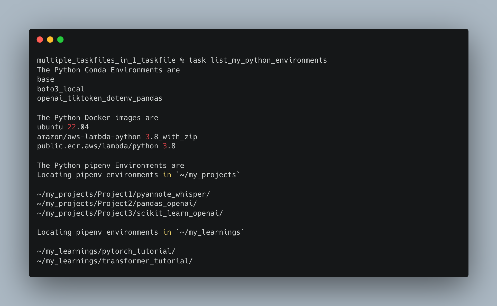
9. Want to know some more?
9.1 Want to list all tasks in your taskfile?
% task --list-all
# for indentifying the global tasks (refer section 4)
% task --global --list-all9.2 Want a tab auto-complete?
- I use
zshhence used the instructions here to enable tab-based auto-complete feature
## find where `_task` file is (if using linux, change `_task` to `task.bash`
any/directory % find /usr -type f -name "_task"
/path/to/_task
## move the _task file to `site_functions`
any/directory % mv /path/to/_task /usr/local/share/zsh/site-functions/_task
## add the following lines to ~/.zshrc
autoload -U compinit
compinit -i9.3. What to know about some more features?
What have I missed?:
I have not used the following features of Taskfile, yet. But if you are interested, take a look at the official documentation:
10. Real-world AWS Cloud Recipes
- Let us learn to apply some of the above concepts in 2 real-world cloud examples
- The purpose of the below two cloud recipes is not just to share replicable infrastructure codes but also to act as a good source of documentation as well.
- I am learning for a AWS certification exam, and what better way to learn than create AWS infra from scratch, in a replicable way, using Taskfiles!
10.1. Taskfiles to create a Simple AWS Lambda from Scratch using AWS CLI commands
- How are we going to create a simple AWS Lambda using Taskfiles?
source: Image is created by author
All these files for this section are located here
The actual code is just the simple python file below
hello_lambda.py.
"""
A Lambda Function to Greet Hello, <User>. The code is a simplified version of the official example below
Source: https://docs.aws.amazon.com/apigateway/latest/developerguide/api-gateway-create-api-as-simple-proxy-for-lambda.html
"""
import json
def lambda_handler(event, context):
"""
event argument needs to be in the fasion `{"greeter": "Senthil"}`
context argument is a default passed to the handler function. Know more here: https://docs.aws.amazon.com/lambda/latest/dg/python-context.html
"""
greeter = event['greeter']
res = {
'statusCode': 200,
'headers': {
'Content-Type': '*/*'
},
'body': 'Hello everyone, This is '+greeter+'!'
}
return res- All the infrastructure as codes (IAC) are abstracted in the main
Taskfile.yml(which in turn sources from modularized yml files). The supporting files needed for the creation of lambda are listed below as well.
hello_lambda % tree -L 2 .
.
├── IAM_tasks.yml
├── Taskfile.yml
├── lambda_creation_tasks.yml
├── lambda_invoke_and_cleanup_tasks.yml
└── supporting_files
├── iam_tasks
│ ├── sample_iam_policy.json
│ └── trust_policy.json
├── lambda_creation
│ └── aws_cli_command_for_lambda_creation.bash
└── lambda_testing
├── test_event_1.json
└── test_event_2.jsonIf you want to see the folder
./supporting_filesin detail, check the repo hereThe main
Taskfile.yml
version: "3"
includes:
iam_tasks:
taskfile: ./IAM_tasks.yml
lambda_creation_tasks:
taskfile: ./lambda_creation_tasks.yml
testing_tasks:
taskfile: ./lambda_invoke_tasks.yml
tasks:
1_setup_iam_policy_and_role:
summary: |
Goal - Steps to create IAM Policy and Role
Step 0- Prepare the IAM_Policy json (the permissions that the lambda function needs such as Cloudwatch or S3) and
trust policy json (the role needs to assume a policy to invoke the lambda)
Step 1- Create the policy (we are having an empty policy; no extra permission needed)
Step 2- Create the role with the trust_policy
Step 3- Attach policy to role
cmds:
- task iam_tasks:create_policy
- task iam_tasks:create_role_with_lambda_trust_policy
- task iam_tasks:attach_policy_to_role
- task iam_tasks:get_role_arn
silent: false
2_create_lambda:
summary: |
Goal: Create a lambda
cmds:
- task lambda_creation_tasks:create_lambda_function
silent: false
3_invoke_lambda_multiple_times:
summary: |
Goal: Test the lambda with various test events
cmds:
- task testing_tasks:test_event_1
- task testing_tasks:test_event_2
silent: true
4_cleanup:
summary: |
Goal: Clean all the resources you had created such as
lambda, iam_policy and role
cmds:
- task iam_tasks:clean_iam_policy_and_role
- task lambda_creation_tasks:delete_lambda_function
silent: false- Let us test the tasks now !
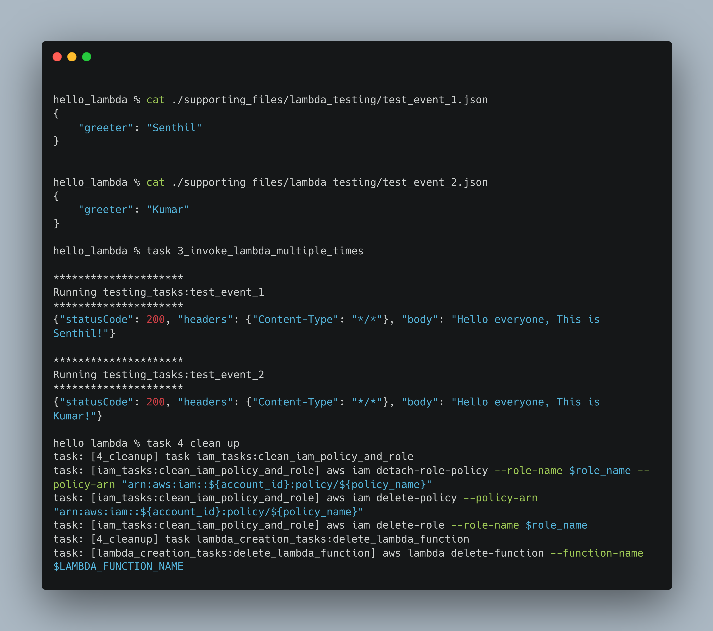
10.2. Taskfile to create a EC2 instance from scratch using AWS CLI commands
- What are we going to accomplish
- Create a EC2 instance ensconced inside a public subnet in a VPC, with a security group layer protection
- There are so many reasons why would need a EC2 instance. You could use one host your model served in a flask app. You could serve a FastAPI app or a streamlit app in that EC2 instance or do a zillion other things !
source: Image is created by author
- Checkout this Taskfile.yml which has the following tasks. The taskfile also acts as a documentation in itself and also for replicating the creation of infrastructure.
create_and_connecte_to_ec2_instance % task --list-all
task: Available tasks for this project:
* 1_create_vpc_resources:
* 2_complete_vpc_setup:
* 3_create_ec2_resources:
* 4_ssh_into_ec2_instance:
* 5_cleanup_the_ec2_instance:
* 6_cleanup_other_resources:- Let us look into the sub tasks in the above tasks
version: "3"
includes:
sub_tasks:
taskfile: ./sub_tasks.yml
tasks:
1_create_vpc_resources:
summary: |
Step 1 - Create a VPC
Step 2 - Create a Public Subnet
Step 3 - Create a Route table
Step 4 - Create a Internet Gateway
Step 5 - Creata a Security Group
...
2_complete_vpc_setup:
summary: |
Step 6 - allow_public_subnet_to_auto_assign_ipv4_address
Step 7 - attach_int_gw_to_vpc
Step 8 - create_route_in_route_table
Step 9 - associate_public_subnet_in_route_table
Step 10 - allow_ssh_port_access_in_sg
...
3_create_ec2_resources:
summary: |
Step 11 - generate_ec2_key_pair
Step 12 - create_ec2_instance
...
4_ssh_into_ec2_instance:
summary: |
Step 13 - running_ec2_instance_details
Step 14 - ssh_into_the_ec2_instance
...
5_cleanup_the_ec2_instance:
summary: |
Step 15 - stop_ec2_instance
Step 16 - terminate_ec2_instance
...
6_cleanup_other_resources:
summary: |
Step 17 - delete_security_group
Step 18 - modify_public_subnet_attribute
Step 19 - delete_public_route_table, delete_intetnet_gateway and delete_subnet
Step 20 - delete_vpc
...P.S. A digression alert: - If I take another stab at the above sample projects, I would have now used Cloudformation or Terraform, instead of AWS CLI. - But it would still be with Tasfiles for packaging those commands. For example, infra would created using aws cloudformation create-stack --stack-name myteststack but this command would be inside a task create_vpc_subnet_stack
Conclusion
- We have seen how useful taskfiles are for different types of requirements. Be it a AWS CLI or terraform script,a bash or python script, or a set of docker/K8s commands, abstract them away using easy to create and use taskfiles.
- One more thing to note is that, environment variable values can be kept hidden in a
.env(or.any_file_namefor that matter.) You do not have to explicitly save them inside a git sharedTaskfile.yml. This process ensures more security and replicability of the codebase across projects
If you think Taskfile is so useful to you, consider donating the author of this amazing Go module here.
This is a definitely useful tool to have in your tool box. Happy learning, everyone.